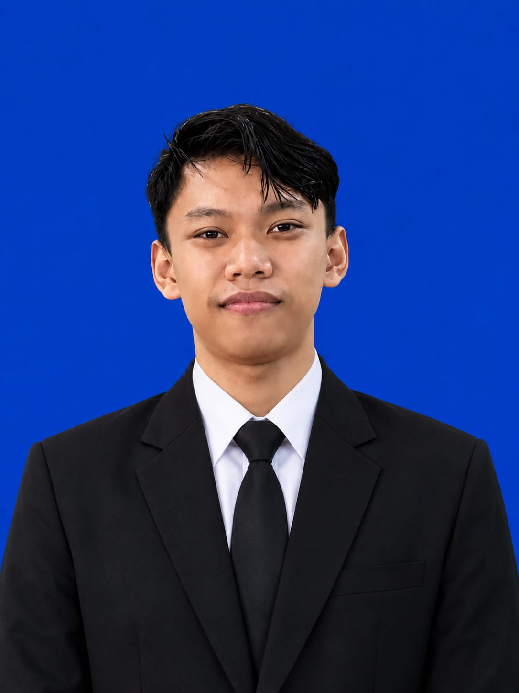
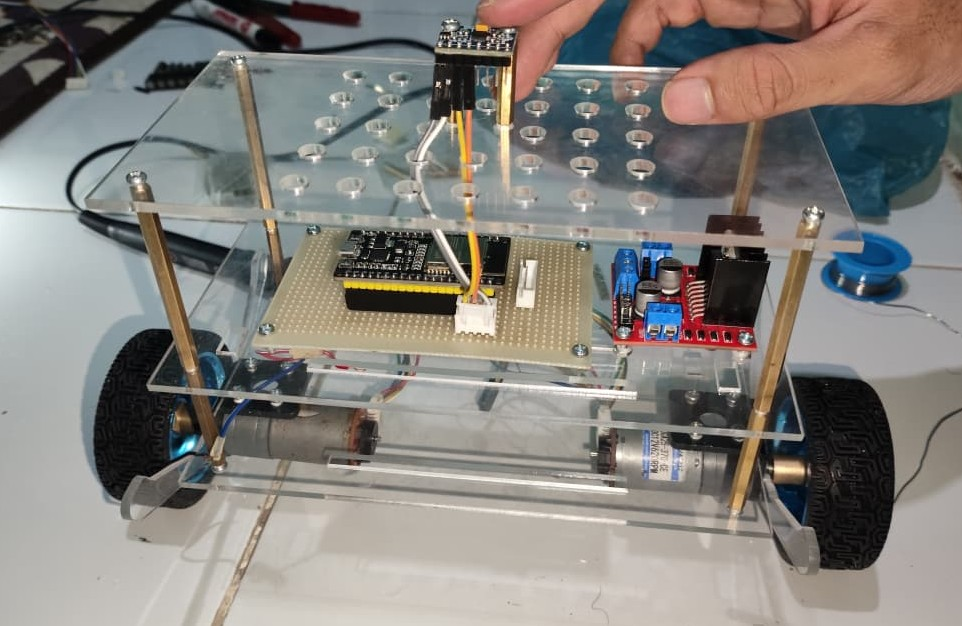

Sigit Ali Fandi
Mahasiswa D4 Teknik Mekatronika - PENS
Surabaya, Jawa Timur | WhatsApp: 0857-3215-0389
Email: sigitalifandi@gmail.com | GitHub: github.com/sigitalifandi
Profil Singkat
Mahasiswa semester 5 D4 Teknik Mekatronika di Politeknik Elektronika Negeri Surabaya (PENS) yang memiliki ketertarikan mendalam pada sistem otomasi industri, pemrograman PLC, mikrokontroler (ESP32), serta pengembangan robotika dan sistem kontrol cerdas.
Pengalaman & Organisasi
Memimpin jajaran pengurus organisasi, mengkoordinasikan program kerja, pembinaan anggota, serta mengelola hubungan eksternal dan kegiatan sosial kemasyarakatan.
Bertanggung jawab dalam perawatan panel mesin industri serta pengerjaan fabrikasi workshop mekanik.
Proyek Pilihan & Portofolio
Merancang dan membangun transporter roda dua keseimbangan otomatis menggunakan mikrokontroler ESP32, sensor MPU6050 IMU, motor driver TB6612FNG, dan komponen mekanik 3D printing.

Pengembangan sistem kontrol lengan robot 2 sumbu menggunakan C++ dan servo Dynamixel untuk implementasi Forward & Inverse Kinematics serta trajectory plotting.

Sertifikasi & Penghargaan
- Juara 3 Lomba Karya Teknologi PLC Nasional - Himatektro UNESA (2022)
- Sertifikasi Kompetensi Keahlian Teknik Komputer dan Jaringan / SISTERNET
- Pelatihan Keterampilan Manajemen Mahasiswa (LKMM Pra-TD & TD PENS)